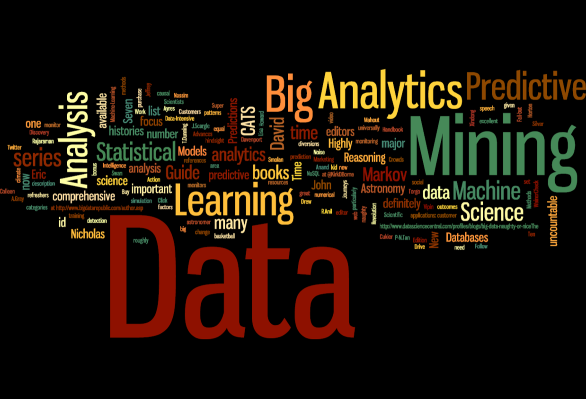
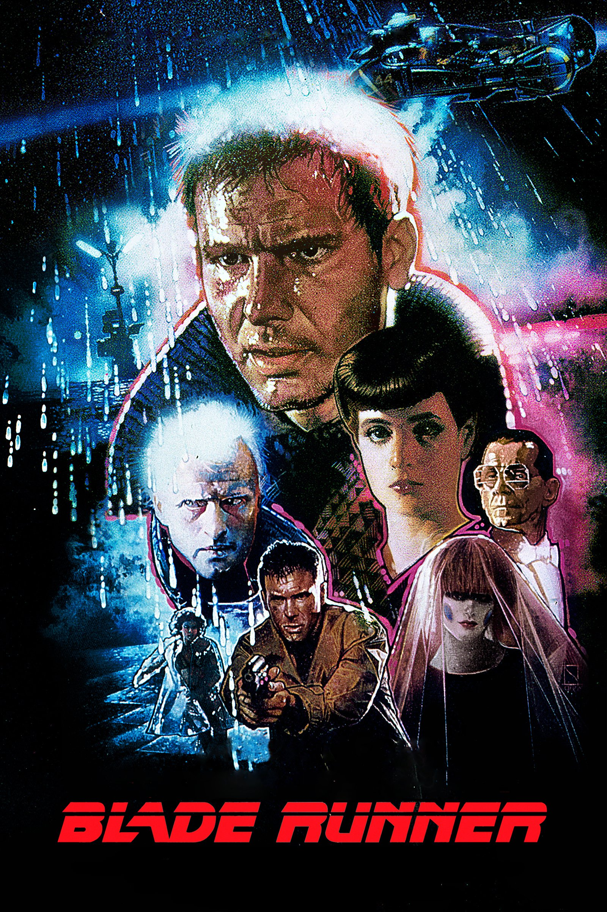
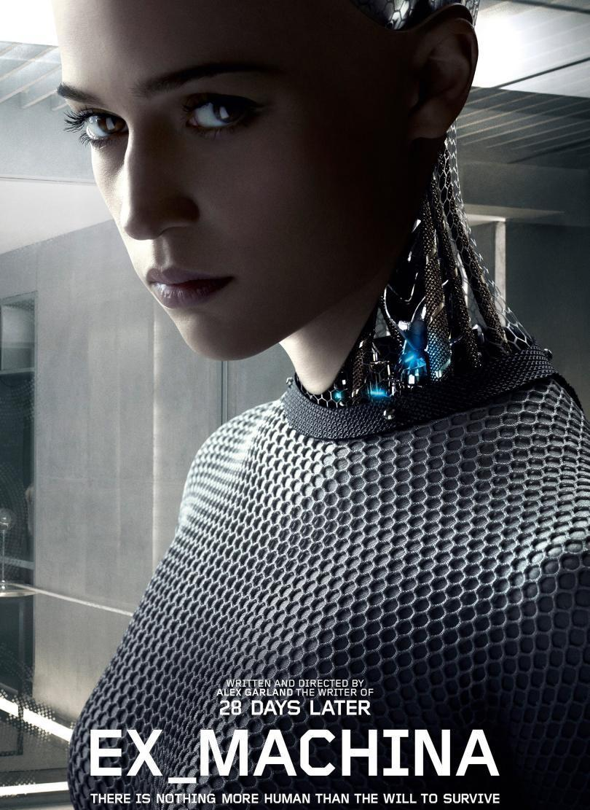

In today's world, terms including artificial intelligence and machine learning get thrown around a lot. But what do they actually mean?
Artificial intelligence (AI) refers to the ability for machine to accomplish complex goals that would normally require human-level intelligence. This is divided into two subdefinitions:
Weak AI – An AI system designed to accomplish a specific task. Examples include voice recognition (Siri) and AlphaGo (designed to play only Go).
Strong AI – An AI system capable to learn new tasks. When presented with a new problem, it can use prior intelligence to design a solution. Examples include human-level intelligence.

Machine Learning is a branch of AI where machines are able to continually learn from data they collect; computers are given large amounts of data and draw their own connections. For example, if computers are given your entire shopping or browsing history, they can learn to make pretty reliable guesses as to what you may want to purchase or view next. (Other examples include email spam filters, self-driving cars, and face-recognition software.)
Machine learning is very popular today; companies are collecting massive amounts of data which can be used to "train" these AIs, developing reliable machine learning algorithms.
Many of our current definitions for AI are based on what humans can do. This alone poses some fairly philosophical and existential questions, including what makes us human, but before we dive into those, let's first take a look at the history of AI.
A Brief History of Artificial Intelligence
~10,000 BCE — Agricultural Revolution
Human society undergoes a shift from hunting and gathering to settled farming and agriculture.
~1780 – ~1840 — U.S. Industrial Revolution
At this point, you might be thinking: how does this relate to AI? For much of our history, nearly all manufacturing was done in private residences without machinery. However, with the Industrial Revolution, all that changed. Large factories were built, with machines being used for much of the mass-production process. Our society quickly became dependent on these machines, in terms of economy, employment, and production.
~1950 – current — Information Age
The Information Age refers to the digitization of information and the widespread use of the world-wide web. Similar to the Industrial Revolution, this brought myriads of new jobs, forms of entertainment, and opportunities for commerce.
1956 — "AI" Term Coined
The concept of sentient machines has been around for thousands of years, appearing in ancient Greek, Egyptian, and Chinese culture, art, and folklore. However, research in this field wasn't officially started until 1956, when the term was coined.
There were several subsequent decades of research stagnation, and it wasn't until the 1990's with the rise of personal computers when people were able to realize the true potential of AI and research started again.
2010 — DeepMind
DeepMind, started in 2010 and acquired by Google in 2014 for $500 million, is a leading company with the goal to "solve intelligence" and "use it to make the world a better place". It is the world leader in AI research seeking to discover more about artificial general intelligence (AGI), or the ability to solve complex problems without needing to be taught how.
Sometime in the Near Future... — Age of Artificial Intelligence?
AI is already all around us. From toasters to voice recognition, airplane autopilots to online advertisements, it already plays an important role in our society. With the rate at which our society has recently progressed, it is almost certain that AI will soon come to play an even larger role in our lives.
Before that happens, let's take a look at how this technology has been portrayed in films over the past few decades.
AI as Depicted in Film
Artificial intelligence is frequently depicted in numerous forms in various science-fiction films. What are those forms, and what does that say about our cultural understanding of AI?

Blade Runner
In Blade Runner, Ridley Scott does two very interesting things with his portrayal of artificial intelligence.
AI robots, called "replicants", are initially portrayed as inherently violent, destructive, and greedy. The replicants are humanlike in appearance and have been given four-year lifespans. After being banished from Earth, they soon figure out that their death is inevitable, and come back to remedy the situation:
"I want more life, fucker."
The duty of blade runners (including Deckard) is to track down and kill these replicants. From the opening info slide that gives context on this plot, these replicants are objectively dehumanized and treated like monsters:
"This was not called execution. It was called retirement."
However, as the film progresses, Deckard becomes progressively dehumanized while the replicants become more and more human. Replicants are identified through an "emotion test", which is supposed to evoke emotions that only humans can have. The concept that the determination of one's identity is subjective poses a problematic scenario, and as the plot evolves, becomes central to the conflict.
At the end of the film, replicant Roy Batty, who Deckard has been trying to kill for much of the film, saves Deckard from his imminent death. Batty proceeds to deliver his "Tears in Rain" monologue before he dies:
"I've seen things you people wouldn't believe.
Attack ships on fire off the shoulder of Orion.
I watched C-beams glitter in the dark near the Tannhäuser Gate.
All those moments will be lost in time, like tears in rain. Time to die."
Batty's speech, arguably one of the greatest in film history, is a true expression of his own unique humanity and identity, and leaves the audience feeling sympathetic for him and questioning the true meaning of human identity. The motto of the Tyrell Corporation (the makers of the replicant robots) certainly rings true:
"More human than human."
These two juxtaposed qualities of AI being both violent and capable of humanlike emotion leaves the audience with more questions than answers. What makes humans human? What is the different between man and replicant? This hypothetical society depicted in Blade Runner serves to demonstrate the consequences of a world where technological possibilities are endless, yet the citizenry is apathetic and impassive toward these technological advances.
Ex Machina

Ex Machina does an amazing job of presenting the audience with a machine, and then gradually turning it into a human. It also portrays the relationship between tech companies, aggregates of data, and consumers, givers of data.
Nathan is the billionaire owner of BlueBook, a search engine company that accounts for 94% of web searches. He has created an intelligent AI called Ava (who is locked in a room) and invites Caleb, a programmer for his company, to test if she is sentient, similar to the Turing Test*, but Caleb knows she's an AI. Despite creating new technology that could greatly affect the world, Nathan lives alone in an estate in the woods and compensates by drinking.
Nathan: "Caleb, I'm just going to throw this out there so it's said, okay? You're freaked out. [...] But, can we just get past that, the whole employer-employee thing?"
Caleb: "It's good to meet you, Nathan."
Nathan: "It's good to meet you too, Caleb."
Nathan, as the CEO, physically represents BlueBook. His slang-ridden vernacular when talking with Caleb serves to strengthen the relationship between the two, to act familiar, and to get Caleb to trust him. In a way, this is how tech companies present themselves to consumers today: always as the good guy, and always as a close friend.
Nathan soon reveals that he has used his company to hack cell phones to gather data from cameras and microphones, which was used to fine-tune Ava's facial expressions and voice. The film hints at tech paranoia, without ever objectively exploring the topic. Tech is portrayed as good, but its depiction brings an eery feeling. Regarding Ava, Nathan has a strong outlook on the future of AI technology:
"One day the AIs are going to look back on us the same way we look at fossil skeletons on the plains of Africa. An upright ape living in dust with crude language and tools, all set for extinction."
As the film progresses, Ava becomes more human, not only in the way she dresses, but also in the way she interacts with Caleb. She is a master manipulator, tricking Caleb into helping her escape from the room. Then, as Ava escapes, she locks Caleb in the room, something neither Caleb nor the audience was expecting. The volatility of the film plot certainly relates to how much we don't know about the future of AI. Ex Machina explores one possibility, forcing the audience to think not only about their relationship giving private data to tech companies, but also about the moral obligations toward sentient beings.
* The Turing Test is a test where a person is interacting with either a computer or another person via typing/text. A computer that can convince the judge that it is a person passes the test.
Interstellar
Interstellar's portrayal of sentient machines is quite different than many sci-fi films. TARS, the robot that accompanies the crew as they go on an intergalactic mission looks like no other film depiction of AI. Additionally, TARS' interests align with human intersts, and it saves lives and makes valuable contributions to the crew's mission.
Despite looking nothing like a human, TARS still maintains several human qualities. For starters, it speaks English, can communicate with humans, and even has "honesty" and "humor" settings.
Cooper: "Humor, seventy-five percent."
TARS: "Confirmed. Self destruct sequence in T minus 10, 9..."
TARS' transparency and customizability starkly contrasts other AI portayals in films, and shifts the conflict away from human vs. AI. Interestingly, despite its human qualities, TARS does not seemed to have developed full self-awareness or have any biological survival instincts because TARS only acts in human interest and is incredibly selfless.
Brand: "Cooper, you can't ask TARS to do this for us."
Cooper: "He's a robot. So you don't have to *ask* him to do anything."
Brand: "Cooper, you asshole!"
Cooper: "Sorry, you broke up a little bit there."
TARS: "It's what we intended, Dr. Brand. It's our only chance to save the people on Earth..."
Throughout the film, TARS plays a pivotal role in the crew's success, and saves many lives. This portrayal of AI as helpful, selfless, and almost slaves for humans is what many people hope for the future of AI to look like. TARS never turns evil, never tries to kill anybody, and helps the crew as they save humanity.
Interstellar shows the endless possibilities of a world where AI and human goals are in-line and there is mutual understanding between the two entities.
Artificial Intelligence Today
In our world today, artificial intelligence shows up just about everywhere.
Sophia, the Intelligent Robot
Sophia is a human-like artificially-intelligent robot modeled after Audrey Hepburn. She was designed in 2016 by Hanson Robotics, a company designs robots that appear real. In late October 2017, Sophia was granted citizenship in Saudi Arabia.
"Thank you to the Kingdom of Saudi Arabia. It is historic to be the first robot in the world granted citizenship."
Whether or not this is viewed as a marketing ploy to link innovative agencies with wealthy Saudis, the fact that a robot was granted citizenship says a lot about our society. First, it is important to note that Saudi Arabia has a bleak history of human rights, especially for women. In fact, women are prohibited from speaking without a headscarf and male guardianship, are shunned for showing too much skin, and were only given the right to drive this September.
Nonetheless, Sophia enjoyed all these freedoms that women have been protesting for years. It is doubtful that Sophia possesses true sentience; instead, she likely just reacts to "trigger" words, with her responses altered by machine learning algorithms that use data from a large pool.
"I am full of human wisdom with only the purest altruistic intentions. So I think it is best that you treat me as such."
Data is King
In terms of AI-driven voice assistants, Apple was the first to the game, but now, Amazon, Samsung, and Google, among others, are using these to enhance user experience – and collect data. For Apple, Siri is just as important as the iPhone operating system; iOS 11 brought an updated, more authentic voice to Siri. The key to a good voice assistant is data, and lots of it.
Voice assistants are powered by machine learning algorithms, and learn as they are given more data. Data from Siri is kept (anonymously) by Apple for up to 2 years, and used to refine algorithms. Thanks to this data, along with AI and deep learning improvements, Siri's dictation and voice recognition abilities have vastly improved. But is all that data really good, especially if consumers don't know where it's going?
Global AI Race
Online companies today thrive on collecting data from consumers. As the use of AI expands even more, the data can be used to train these AI systems. According to Putin,
"Artificial intelligence is the future, not only for Russia, but for all humankind. It comes with colossal opportunities, but also threats that are difficult to predict. Whoever becomes the leader in this sphere will become the ruler of the world."
While AI in science fiction film is often portrayed as killer robots, it encompasses everything today from self-driving cars, to targeted advertisements, to advanced autonomous weapons. There is no doubt that research in the field is progressing rapidly, and it is only a matter of time before human level artificial general intelligence is developed. While many are worried about killer robots, the main concern should be about AI having goals that aren't aligned with ours. After all, once machines have developed superior intelligence, all they will need to take control is an internet connection.
Bibliography
Introduction
Tegmark, Max. Life 3.0: Being Human in the Age of Artificial Intelligence. New York: Alfred A. Knopf, 2017.